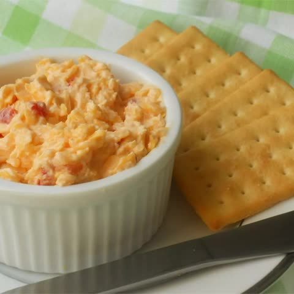

Pimento Cheese

Description
Pimento cheese is a popular Southern spread that's traditionally made with shredded Cheddar, mayonnaise, and pimentos.
It's commonly served with crackers and vegetables or as a sandwich filling.
Pimento cheese is often called the "pâté of the south."
Ingredients
- 2 cups shredded extra-sharp Cheddar cheese
- 8 ounces cream cheese, softened
- 1/2 cup mayonnaise
- 4 ounces diced pimentos, drained
Steps
-
Place Cheddar cheese, cream cheese, mayonnaise, pimento in a large bowl.
Mix until thoroughly combined. Season to taste with salt and black pepper.
Go to main page